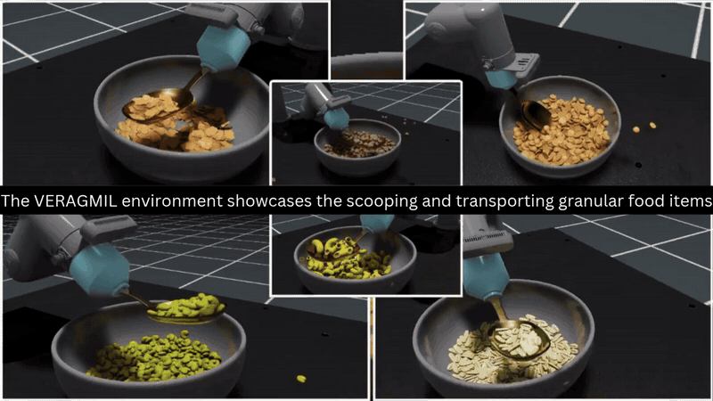
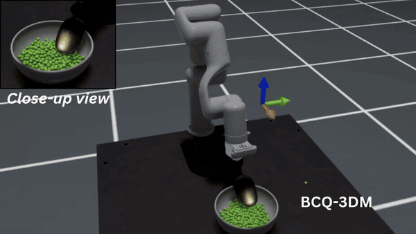
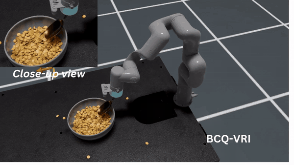
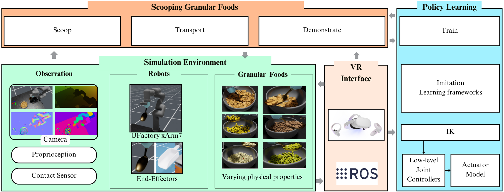

VERAGMIL
Learning robotic granular food manipulation from virtual reality demonstrations
An imitation-learning framework for robot-assisted feeding
2025 IEEE/RSJ International Conference on Intelligent Robots and Systems

Overview
VERAGMIL is a simulation and data-collection framework for teaching robots to scoop and transport granular foods. It combines GPU-accelerated physics with a virtual reality interface so a person can demonstrate the task directly in 3D. The resulting data supports imitation learning for robot-assisted feeding scenarios where spillage and variation in food properties matter.
The study compares policies trained from VR and 3D space-mouse demonstrations using Behavioral Cloning (BC), recurrent Behavioral Cloning (BC-RNN), and Batch-Constrained Q-learning (BCQ). Performance is evaluated through task success, spillage, completion time, and generalization to unseen food items.
Policy evaluations
Short clips from the accompanying video.


How it works

- Simulate. Granular foods with varied shapes and physical properties are modeled in NVIDIA Isaac Sim and Isaac Lab.
- Demonstrate. An operator records precise scooping and transport trajectories through VR; a 3D space mouse provides a comparison condition.
- Learn and evaluate. Imitation-learning policies are tested against a human-expert baseline and on food items not seen during training.
Key result
Policies learned from VR demonstrations consistently outperformed those trained with 3D space-mouse data. BCQ achieved the strongest overall performance, particularly in reducing spillage, and came closest to the human-expert baseline.
Paper
VERAGMIL: Virtual Environment for Scooping Granular Foods with Imitation Learning Models
Amanuel Ergogo, Diego Dall'Alba, and Przemyslaw Korzeniowski. IROS 2025, pages 13075–13082.
Abstract
Robot-Assisted Feeding (RAF) systems are essential for assisting individuals with disabilities or motor impairments in eating tasks. Manipulating granular food items, such as rice and beans, poses significant challenges due to their dynamic physical properties. Learning from human demonstrations offers a promising solution, but acquiring high-quality demonstrations is complex. VERAGMIL combines a high-fidelity simulator with an intuitive VR interface for recording demonstrations and supporting different imitation learning methods. Experiments compare BC, BC-RNN, and BCQ on scooping and transport tasks using VR and 3D space-mouse demonstrations. Results show that VR-based demonstrations lead to stronger policies, with BCQ performing best overall, especially in reducing spillage and approaching human performance.
Citation
@inproceedings{ergogo2025veragmil,
author = {Ergogo, Amanuel and Dall'Alba, Diego and Korzeniowski, Przemyslaw},
title = {VERAGMIL: Virtual Environment for Scooping Granular Foods with Imitation Learning Models},
booktitle = {2025 IEEE/RSJ International Conference on Intelligent Robots and Systems (IROS)},
year = {2025},
pages = {13075--13082},
doi = {10.1109/IROS60139.2025.11247362}
}